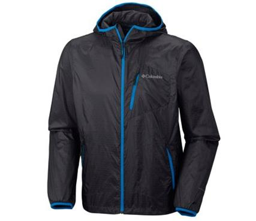
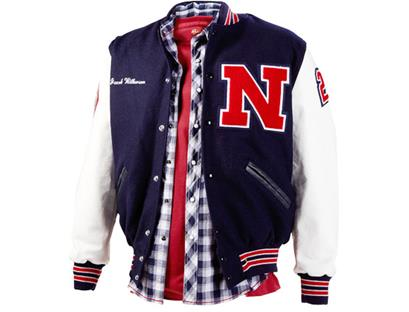
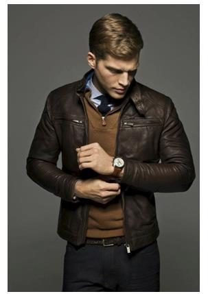
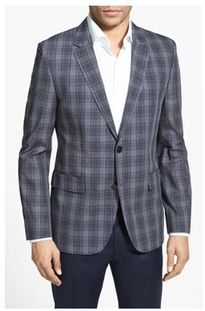

1.jaket windbreaker
Memiliki ciri khas karet di pergelangan tangannya, memiliki hoodie dan kerah sehingga cocok bagi yang sering menghabiskan waktu di daerah yang berhawa dingin atau para pengendara motor. Jacket ini didesain secara khusus sehingga mampu menjaga suhu tubuh tetap normal dan merasa hangat meskipun kondisi cuaca sedang tidak bersahabat atau kondisi cuaca yang ekstrim seperti angin besar hingga suhu yang dingin.

2.jaket bomber
Memiliki nama lain “flight jacket”, outer ini awalnya dipakai oleh para pilot dan menjadi tren fashion remaja di tahun 1970an. Di tahun 1990an, jacket ini kembali menjadi trend an dipakai oleh para penyanyi dan musisi hip hop. Jacket ini memiliki ciri khas berbentuk bulky atau gemuk, dilengkapi dengan risleting dan kantung di kedua sisinya.

3. jaket varsity
Awalnya jacket ini bernama Letterman Jacket dan hanya digunakan oleh para mahasiswa Universitas Harvard. Seiring dengan berjalannya waktu, jacket ini menyebar penggunaannya ke kampus-kampus lain hingga sekolah menengah atas dan kini dipakai oleh siapa saja. Ciri khas dari jacket ini adalah huruf yang dibordir di dada kiri jacket.

4. jaket kulit
Sesuai dengan namanya, jaket ini terbuat dari bahan kulit binatang baik itu kulit asli maupun kulit sintetis atau buatan. Pelindung dari cuaca dingin dan angin ini memiliki ciri tampak depan adalah bukaan jacket berupa risleting, kancing, atau sabuk dari leher hingga bawah.
5. jaket sport
Disebut juga sports coat, tweed jacket atau tweed coat yang dipakai untuk acara formal. Ciri khasnya adalah terbuat dari bahan suede, corduroy, denim, dan tweed dengan potongan sederhana mirip jas. Jacket ini biasanya dipakai untuk kegiatan aktif di luar ruangan.
